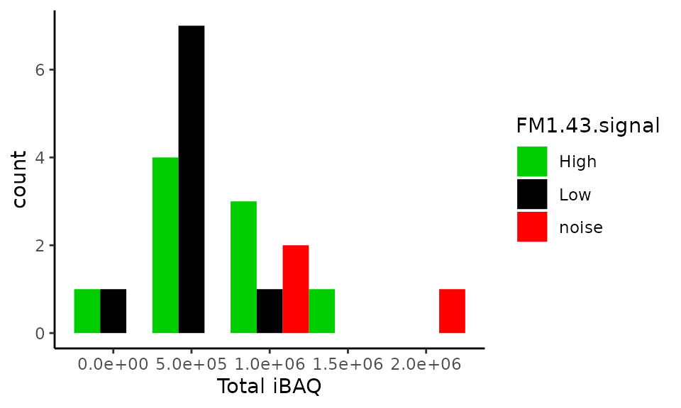
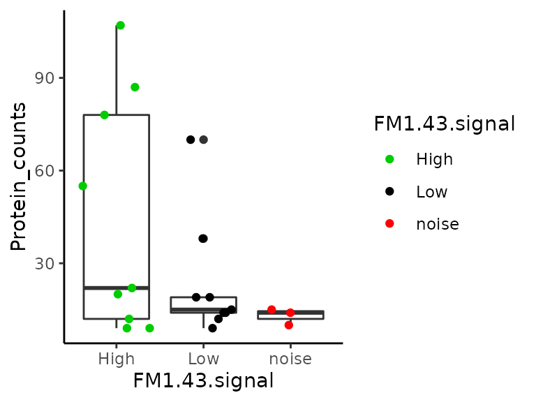
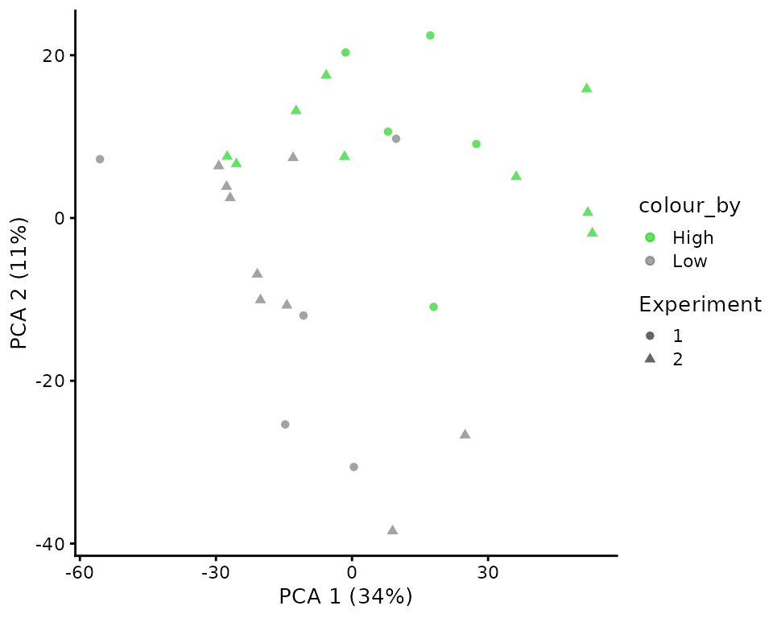

Reproduction of the hair-cell development analysis (Zhu et al. 2019, eLife)
Christophe Vanderaa1, Computational Biology, UCLouvain
Laurent Gatto, Computational Biology, UCLouvain
7 October 2022
zhu2019EL.RmdAbstract
This vignette presents a robust and standardized workflow to reproduce the data analysis published in Zhu et al. (2019, eLife), the first article to have published a trajectory analysis on mass spectrometry (MS)-based single-cell proteomics (SCP) data. The replication of the analysis is performed using the scp package. This package is based on well-defined Bioconductor classes that provide powerful tools for single-cell RNA sequencing and for MS-based proteomics. We demonstrate that the scp package can be applied to label-free SCP data and can be used to highlight some issues in the data.Introduction
The hair-cell development study (Zhu et al. (2019)) is the first study to apply developmental trajectory analysis to mass spectrometry (MS)-based single-cell proteomics (SCP) data. It is also the first paper to apply SCP to a biological research question as a tool rather than as a proof of concept. This makes reproducing the analysis very appealing as it allows to demonstrate our newly developed software is suited for answering biologically meaningful questions and provides a robust tool for standardized and reproducible research.
The research question here is to better characterize the differentiation of supporting cells into hair cells in the utricle of E15 chick embryos. MS-SCP was conducted on samples containing between 1 and 20 cells. The 20-cell samples were used to perform differential expression analysis between hair cells from supporting cells. The single-cell samples were used to conduct developmental trajectory analysis. This later analysis will be the focus of this vignette.
No code is provided to reproduce the original results. The data was
analysed to some extend in Excel and differential expression analysis
and trajectory analysis were perform in R using the limma
and CellTrails packages, respectively. Our attempt of
reproduction is solely based on the methods section.
Before starting, we load the replication package to make use of some helper functions. Those functions are only meant for this reproduction vignette and are not designed for general use.
library("SCP.replication")
scp workflow and data structure
The data processing workflow we carry out in this vignette is inferred from the methods section of the paper. Since no reproducible data analysis script was provided, we are not able to accurately evaluate the accuracy of the replication of the results and will rely on the information in the article to assess whether we can come up with the same conclusions.
To perform SCP data analysis, we have developed a new data framework
that combines two existing Bioconductor classes. The
SingleCellExperiment class provides an interface to many
cutting edge methods for single-cell analysis and the
QFeatures class facilitates manipulation and processing of
MS-based quantitative data. The scp
vignette provides detailed information about the data structure. The
scp package extends the functionality of
QFeatures for single-cell application.
The required packages for running this workflow are listed below.
scpdata and the hair-cell development dataset
We also implemented a data package called scpdata (Vanderaa and Gatto (2022)). It distributes
published MS-SCP datasets, such as the dataset that will be analysed in
this vignette. The data were downloaded from the data source provided in
the publication and formatted to a QFeatures object so that
it is compatible with our software. The underlying data storage is based
on the ExperimentHub package that provides a cloud-based
storage infrastructure.
The dataset was retrieved from the PRIDE repository (accession ID: PXD014256). The annotation file that is provided in this repository contains mismatched information. We therefore received a corrected version from the authors. The dataset contains three types of quantitative data: quantified peptide to spectrum match (PSM) data, peptide data and protein data. They were generated after running MaxQuant on the raw MS files.
The formatted data can be retrieved from the scpdata
package using the zhu2019EL() function.
scp <- zhu2019EL()The data contain 63 different SingleCellExperiment
objects that we refer to as assays. Each assay contains
expression data along with feature metadata. Each row in an assay
represents a feature that can either be a PSM, a
peptide or a protein depending on the assay. Each column in an assay
represents a sample. Below, we show the overview of the
scp dataset.
scp
## An instance of class QFeatures containing 63 assays:
## [1] 1H1a: SingleCellExperiment with 152 rows and 1 columns
## [2] 1H1b: SingleCellExperiment with 267 rows and 1 columns
## [3] 1H1c: SingleCellExperiment with 128 rows and 1 columns
## ...
## [61] peptides: SingleCellExperiment with 3444 rows and 60 columns
## [62] proteins_intensity: SingleCellExperiment with 840 rows and 60 columns
## [63] proteins_iBAQ: SingleCellExperiment with 840 rows and 60 columnsThe 60 first are the peptide to spectrum match (PSM) quantification
data generated for each MS run. PSMs were quantified and identified by
MaxQuant (Tyanova, Temu, and Cox (2016)).
The samples were acquired using a label-free protocol meaning that every
run contains an individual sample and therefore every assay contains a
single column. The peptides assay contains the peptide
quantifications and the proteins_intensity (summed ion
chromatogram intensities) and the proteins_iBAQ (iBAQ
normalized protein quantification). All tables were generated from
MaxQuant.
The sample annotation can be found in the colData of the
dataset. There three important annotation fields:
-
Cells.per.well: the samples contains either 0 (blank), 1 (single-cell), 3, 5, or 20 cells -
FM1.43.signal: single-cells from chicken utricles were first separated using FACS based on FM1-43 labelling, which was reported to label more strongly hair cells than supporting cells (Zhu et al. (2019)). -
Experiment: the samples were acquired in two separate experiments (batches). From the MS file names (seeRaw.filein thecolData), the two experiments seemed to be acquired with one year interval.
colData(scp)
## DataFrame with 60 rows and 8 columns
## Sample.name FM1.43.signal Cells.per.well Biological.replicate
## <character> <character> <numeric> <numeric>
## 1H1a 1H1a High 1 1
## 1H1b 1H1b High 1 2
## 1H1c 1H1c High 1 3
## 1H1d 1H1d High 1 4
## 1H1e 1H1e High 1 5
## ... ... ... ... ...
## 2L20b 2L20b Low 20 2
## 2L20c 2L20c Low 20 3
## 2N0a 2N0a Low 0 1
## 2N0b 2N0b Low 0 2
## 2N0c 2N0c Low 0 3
## Technical.replicate Raw.file QuantCol Experiment
## <numeric> <character> <character> <character>
## 1H1a 1 701155_Sin... Intensity 1
## 1H1b 1 701157_Sin... Intensity 1
## 1H1c 1 701166_Sin... Intensity 1
## 1H1d 1 701176_Sin... Intensity 1
## 1H1e 1 701190_Sin... Intensity 1
## ... ... ... ... ...
## 2L20b 1 Single_Hai... Intensity 2
## 2L20c 1 Single_Hai... Intensity 2
## 2N0a 1 Single_Hai... Intensity 2
## 2N0b 1 Single_Hai... Intensity 2
## 2N0c 1 Single_Hai... Intensity 2Throughout the vignette, we will ggplot2 from the
tidyverse project (Wickham et al.
(2019)) to visualize the data. For example, we can show the
distribution of the number of cells per sample according to the
experiment and the FM1-43 signal.
Data cleaning
Check iBAQ assay
In the article, the authors claim that:
(…) the total iBAQ attributed to keratins (e.g., human skin contamination) was only 0.1% of the total (…)
Let’s check this by first computing the total iBAQ across all
samples. We can access the quantification data using the
assay method.
To compute the total iBAQ for contaminating proteins, we need to
select only the contaminating proteins. This is performed using the
filterFeatures function which will keep features that pass
a filter applied on the rowData variables. In this case,
the Potential.contaminant field generated by MaxQuant
allows to easily filter out contaminating proteins. Note that we ignore
P07477 corresponding to trypsin because the author’s claim
is about keratin contamination.
scpfilt <- filterFeatures(scp, ~ Potential.contaminant == "+" &
!grepl("P07477", Protein))We can now compute the total iBAQ for the contaminating proteins.
iBAQ <- assay(scpfilt[["proteins_iBAQ"]])
iBAQContam <- sum(iBAQ, na.rm = TRUE)
cat("Proportion of contaminating iBAQ signal:",
round(iBAQContam / iBAQtotal * 100, 2), "%\n")
## Proportion of contaminating iBAQ signal: 29.23 %Surprisingly, the proportion of contaminating iBAQ signal that we compute here is about 30 % which is much higher than the reported 0.1 %.
Remove decoys and contaminating proteins
As shown above, a significant proportion of the quantification is attributed to contaminating proteins. We will therefore remove those along with decoy peptides. This step is not mentioned in the article, but this is commonly applied and will avoid artefacts.
scp <- filterFeatures(scp,
~ Reverse != "+" &
Potential.contaminant != "+")Format missing data
In MS-SCP, zeros can be biological zeros or technical zeros and
distinguishing the two types is a difficult task, they are therefore
better considered as missing to avoid artefacts in downstream analyses.
The zeroIsNA function automatically detects zero values and
replace them with NAs. Those two functions are provided by
the QFeatures package.
Technical performance
In this section, we reproduce some of the plots in figure 1. This figure depicts different technical aspects of the data such as number of detected unique peptides and protein groups, or the distribution of iBAQ values. We also propose additional plots to further assess the quality of the acquisition.

Figures 1 from Zhu et al. 2019.
Number of proteins vs number of cells
Let’s assess the number of protein groups identified in each sample with respect to the number of cells in the sample. The authors were also interested whether the cell type would influence the number of identified peptides. Only the data from experiment 1 is used to generate the plot (see legend of Figure 1 in article).
Counting the number of proteins per sample is straightforward thanks
to the countUniqueFeatures function from
QFeatures. We select the protein assay, count the number of
unique protein groups (the function will automatically ignore missing
data) and store the counts in a new variable in the colData
(we call it here Protein_counts).
scp <- countUniqueFeatures(scp, i = "proteins_iBAQ",
colDataName = "Protein_counts")We can plot the counts from the colData, but we first filter the data
coming from experiment 1 and average the counts to replicate the figure
in the article. This is performed using functionality from the
dplyr package.
df <- data.frame(colData(scp)) %>%
## Take only Experiment 1
filter(Experiment == "1") %>%
## Compute mean and standard error per cell number
group_by(FM1.43.signal, Cells.per.well) %>%
summarise(mean = mean(Protein_counts),
stderr = sd(Protein_counts) / sqrt(length(Protein_counts)))We then plot the data using ggplot2.
ggplot(df) +
aes(x = Cells.per.well,
y = mean,
group = FM1.43.signal,
color = FM1.43.signal) +
geom_errorbar(aes(ymin = mean - stderr,
ymax = mean + stderr),
color = "grey", width = 0.5) +
geom_smooth(method = 'lm',
formula = y ~ poly(x, 2),
color = "grey", lwd =0.5, se = FALSE) +
geom_point(size = 2) +
## Customize the plot aspect to match the figure design
theme_classic() +
scale_color_manual(values = c("green3", "black")) +
ylab("Proteins or groups") +
xlab("# cells")
This plot replicates the figure 1G in the article. More features are found in the FM1-43 high cells compared to the FM1-43 low cells.
Number of peptides vs number of cells
The authors also showed the number of unique peptides identified in each sample with respect to the number of cells in the sample. They further split this information based on the FM1-43 signal level and on the type of identification (direct MS/MS matching or match between run) when applicable. Only the data from experiment 1 is used to generate the plot (see legend of Figure 1 in article).
Counting the peptides could be again performed using
countUniqueFeatures, but since we want to count with
respect to the type of identification method, we will need some more
sophisticated code. First, we collect the PSM meta-information contained
in the rowData of the assays. This is where the type of
identification method (Type) is stored.
rd <- rbindRowData(scp, i = 1:60)[, c("Sample.name", "Type")]Next, we combine the rowData with the sample annotation contained in
the colData. This is performed using the
left_join function from dplyr. The sample name
is used as common variable to control the data joining. Joining the two
tables allow to include information about the FM1-43 signal and the
number of cells per sample.
df <- left_join(data.frame(rd),
data.frame(colData(scp)),
by = "Sample.name")We next constrain the data to only samples from experiment 1. We also encode the type of PSM identification method to be either direct matching (MS/MS) or match between run (MBR).
df <- filter(df, Experiment == "1")
df <- mutate(df, Type = ifelse(Type == "MULTI-MATCH", "MBR", "MS/MS"))We then compute the number of feature per sample and per identification type. The counts are also averaged to plot the mean counts and associated standard error.
## Count the number of peptides in each sample per identification type
group_by(df, FM1.43.signal, Cells.per.well, Type, Sample.name) %>%
summarise(n = n()) %>%
## Compute the average count
group_by(FM1.43.signal, Cells.per.well, Type) %>%
summarise(mean = mean(n),
stderr = sd(n)/sqrt(length(n))) ->
dfFinally, we plot the data using ggplot2.
ggplot(df) +
aes(x = Cells.per.well,
y = mean,
shape = Type,
fill = FM1.43.signal) +
geom_errorbar(aes(ymin = mean - stderr,
ymax = mean + stderr),
color = "grey",
width = 0.5) +
stat_smooth(method = 'lm',
formula = y ~ poly(x, 2),
color = "grey",
lwd =0.5, se = FALSE) +
geom_point(size = 2) +
facet_grid( ~ FM1.43.signal,
labeller = labeller(.cols = label_both)) +
## Customize the plot aspect to match the figure design
theme_classic() +
scale_fill_manual(values = c("green3", "black"), guide = "none") +
scale_shape_manual(values = c(22, 21)) +
ylab("Unique peptides") +
xlab("# cells")This graph replicates figure 1 D and E in the article. There is an almost linear trend between number of peptides and the number of cells per sample when considering direct MS/MS identification. This plot also shows that more features are found in the FM1-43 high cells compared to the FM1-43 low cells.
Total iBAQ vs number of cells
Figure 1F in the article shows the distribution of the total iBAQ with respect to the number of cells per samples. It is expected that samples with more cells exhibit more signal and this plot assess whether the quantification is linear with respect to the number of cells present in the sample.
Again, the data is taken from experiment 1. We first extract the
quantitative data along with sample annotation. We use the
longFormat function to collect the data as a long table
format that is particularly useful to work with
ggplot2.
longdat <- longFormat(scp[, , "proteins_iBAQ"],
colvars = c("Sample.name", "Experiment",
"Cells.per.well", "FM1.43.signal"))As for the number of proteins and peptides, we compute the average and standard error of the iBAQ values over the number of cells per sample and the FM1-43 signal. We also again constrain the data only to data generated by experiment 1.
df <- filter(data.frame(longdat), Experiment == 1)
## Compute the total iBAQ
group_by(df, Sample.name, FM1.43.signal, Cells.per.well) %>%
summarise(total = sum(value, na.rm = TRUE)) %>%
## Compute mean and standard error per cell number
group_by(FM1.43.signal, Cells.per.well) %>%
summarise(mean = mean(total),
stderr = sd(total)/sqrt(length(total))) ->
dfFinally, we plot the data.
ggplot(df) +
aes(x = Cells.per.well,
y = mean,
group = FM1.43.signal,
color = FM1.43.signal) +
geom_errorbar(aes(ymin = mean - stderr,
ymax = mean + stderr),
color = "grey",
width = 0.5) +
geom_smooth(method = 'lm',
formula = y ~ poly(x, 2),
color = "grey",
lwd =0.5, se = FALSE) +
geom_point(size = 2) +
## Customize the plot aspect
theme_classic() +
scale_color_manual(values = c("green3", "black"), guide = "none") +
ylab("total iBAQ") +
xlab("# cells")Again, the above figure accurately reproduces figure 1F from the article.
Total iBAQ in single-cells
Another quality check is to plot the iBAQ distribution for single-cells and blank samples. This distribution is shown for samples coming from experiment 2 that contains more single-cell samples. The authors showed that the total iBAQ is not a good criterion to distinguish blank and single-cell samples.
Using the same table generated by longFormat, we filter
the data generated by experiment 2 and only containing blank or
single-cells samples. FM1-43 signal coming from blanks is considered as
noise, and we sume the total iBAQ for each sample.
filter(data.frame(longdat),
Experiment == 2 & Cells.per.well <= 1) %>%
## M1-43 signal from blanks is noise
mutate(FM1.43.signal = ifelse(Cells.per.well == 0,
"noise", FM1.43.signal)) %>%
## Compute total iBAQ
group_by(Sample.name, FM1.43.signal) %>%
summarise(tiBAQ = sum(value, na.rm = TRUE)) ->
dfWe plot the distribution of the total iBAQ.
ggplot(df) +
aes(x = tiBAQ,
fill = FM1.43.signal) +
geom_histogram(binwidth = 5E5,
position = "dodge") +
## Customize the plot aspect
theme_classic() +
scale_fill_manual(values = c("green3", "black", "red")) +
scale_x_continuous(labels = scales::scientific) +
xlab("Total iBAQ")
Surprisingly, this plot does not reporduce figure 1H. We do not observe the same values for the total iBAQ and the number of samples is different (we have 21, while the article shows 23 samples). The value ranges are also different: \((0, 2.10^6)\) against \((0, 4.10^6)\).
Number of proteins in single-cells
While the total iBAQ cannot distinguish blanks from single cells, the
distribution of the number of proteins identified can separate single
cells from blank samples. Recall that we already stored the protein
counts in the colData. We can filter those counts to
contain data only for experiment 2 and blank and single-cell
samples.
colData(scp) %>%
data.frame %>%
## Keep only single cells or blanks coming from experiment 2
filter(Experiment == 2 &
Cells.per.well <= 1) %>%
mutate(FM1.43.signal = ifelse(Cells.per.well == 0,
"noise", FM1.43.signal)) %>%
## Plot
ggplot() +
aes(x = Protein_counts,
fill = FM1.43.signal) +
geom_histogram(binwidth = 20,
position = "dodge") +
## Customize the plot aspect
theme_classic() +
scale_fill_manual(values = c("green3", "black", "red")) +
xlab("Proteins or groups")This plot should replicate figure 1I in the article. Surprisingly, we observe the same values for single-cell samples (except there are 2 missing samples), but the blank samples are are not all contained in the 0-20 protein bin! Furthermore, binning the data is misleading. A better plot is shown below. More than half of the single-cell samples have less or equal identified proteins compared to blank samples.
data.frame(colData(scp)) %>%
## Keep only single cells or blanks coming from experiment 2
filter(Experiment == 2 &
Cells.per.well <= 1) %>%
mutate(FM1.43.signal = ifelse(Cells.per.well == 0,
"noise", FM1.43.signal)) %>%
## Plot
ggplot() +
aes(y = Protein_counts,
x = FM1.43.signal) +
geom_boxplot() +
geom_jitter(aes(col = FM1.43.signal), height = 0) +
## Customize the plot aspect
theme_classic() +
scale_colour_manual(values = c("green3", "black", "red"))
Intensity distribution within single-cells
An aspect of the data that has been overlooked in the original article is the distribution of the PSM intensities in individual cells. Since the number of single-cells is rather low, we can easily show all distributions on a single figure. Furthermore, we can also include the type of identification as additional information. This is stored in the PSM assays.
We collect the data using the same functionality as presented before.
df <- longFormat(scp[, , 1:60],
colvars = c("Cells.per.well", "FM1.43.signal"),
rowvars = "Type") %>%
data.frame %>%
## Keep only single cells and blanks
filter(Cells.per.well <= 1) %>%
## Clean data
mutate(Cells.per.well = as.factor(Cells.per.well),
FM1.43.signal = ifelse(Cells.per.well == 0,
"noise", FM1.43.signal),
Type = ifelse(Type == "MULTI-MATCH", "MBR", "MS/MS"))We plot the PSM intensities for each sample separately. The distribution within each sample is best summarized using boxplots. We colour the PSMs based on the peptide identification method.
ggplot(df) +
aes(x = assay,
y = value,
colour = Type) +
geom_boxplot(colour = "grey40", outlier.colour = "transparent") +
geom_jitter(alpha = 0.5, size = 0.75) +
facet_grid(~ FM1.43.signal, scales = "free_x",
space = "free_x", labeller = label_both) +
scale_y_log10() +
## Customize the plot aspect
scale_color_manual(values = c("grey40", "orange2")) +
theme_minimal() +
theme(axis.text.x = element_text(angle = 90),
legend.position = "bottom") +
ylab("PSM intensity") +
xlab("Sample")
Two observations can be drawn from this plot:
- We can clearly notice that MBR allows to increase the sensitivity of the identification as low intensity PSMs are mostly identified by MBR. This is expected as low intensity PSMs have an associated spectrum that is harder to identify. However, it is surprising to see that the PSMs with highest intensities are also identified using MBR, those PSMs could be artefacts from the matching.
- Many samples (n = 11) have low number of PSMs. Those samples cannot be differentiated from blanks (three last samples) and this indicates that the run failed for those samples. We would advice to remove those samples from the analysis.
Developmental trajectory analysis
This part of the analysis is truly single-cell analysis. The developmental trajectory analysis infers the developmental states and paths that the acquired are following or have achieved and hence elucidating the mechanisms of differentiation of supporting cells towards specialized hair cells in the utricle.
The workflow
The method section for this analysis mentions:
For single-cell analysis, we filtered all identifications that were robustly detected in at least five cells, leaving a total of 75 proteins (or protein groups). The iBAQ values for proteins in the 30 single cells were normalized to the median of the cells’ mean expression and log2-transformed; non detected values were kept as zeros to avoid imputation artifacts. The empirical Bayes framework available in the sva R package was used to remove the batch covariate, while accounting for the FM1-43 levels as covariate of interest. The same framework has been used previously to correct for batch effects in protein mass spectrometry data. The resulting values are referred to as log2-normalized iBAQ (niBAQ) units. The relationship between protein expression variance and its average expression was fitted using a log-log cubic smoothing spline with four degrees of freedom; 37 proteins with a higher average expression than a log2niBAQ value of 1.0 and a higher variance than the fit (Figure 4A) were kept for dimensionality reduction. The lower-dimensional manifold(four dimensions) was computed and a trajectory was inferred using the CellTrails R package. Protein expression dynamics were calculated by fitting the rolling mean with a window size of five of the log2 niBAQ values and the pseudotime axis using a cubic smoothing spline function with 4-degrees of freedom.
The results of the trajectory analysis on the SCP data is shown in figure 4 in the paper.

Figure 4 from Zhu et al. 2019.
First, we subset the data to keep only single-cell data. Note that we
use drop = TRUE to drop any MS run that does not contain a
single cell.
table(scp$Cells.per.well)
##
## 0 1 3 5 20
## 3 28 7 8 14We can already see there is an issue with respect to the method section. They document an analysis on 30 single-cells, but we here see that only 28 cells are present in this dataset. Furthermore, as mentioned in the previous section, some single-cell runs have failed and should be removed. We here only keep single-cells samples.
Feature selection based on protein detection rate
The first selection filter applied by the authors is to keep only proteins that are identified in at least 5 cells.
sel <- rowSums(!is.na(assay(scp[["proteins_iBAQ"]]))) >= 5
sel <- names(sel)[sel]
scp <- scp[sel, , ]
scp[["proteins_iBAQ"]]
## class: SingleCellExperiment
## dim: 81 28
## metadata(0):
## assays(1): ''
## rownames(81): ENSGALP00000000021 ENSGALP00000000304 ...
## ENSGALP00000073233 ENSGALP00000073404
## rowData names(35): Protein.IDs Majority.protein.IDs ...
## Oxidation..M..site.positions Protein
## colnames(28): 1H1a 1H1b ... 2L1i 2L1j
## colData names(0):
## reducedDimNames(0):
## mainExpName: NULL
## altExpNames(0):We are left with 81 selected proteins against 75 proteins kept by the authors. Before proceeding with the workflow, we will assess the overlap between the selected proteins in this vignette and the selected proteins in the article. Figure 4E provides a heatmap with the names of the 75 selected proteins.
selpaper <- c("LRRC59", "PGM1", "HBBA", "ERP44", "KRT7", "SRSF6",
"TPM3", "RAN", "HSP90B1", "AGR3", "TMSB4X", "HIST1H101",
"EEF1A2", "PDIA3", "EEF2", "CAPRIN1", "ARID4A", "RPN1",
"CCT7", "CNN2", "HIST2H3", "PPIA", "ARF3", "HSPA5",
"GST2L", "SYN3", "DPYSL2", "CLTC", "ANXA2", "VDA2",
"PKM", "VIM", "RAB15", "ACTG1", "CIRBP", "YWHAE",
"HNRNPA2B1", "H2AFV", "HNRNPM", "RPS27A", "GOT2",
"HNRNPH2", "HNRNPH3", "LDHB", "HSPA8", "TUBB4B",
"ZC3H14", "MYO6", "ATP5A1W", "PRDX1", "HSPE1", "CALM2",
"TUBA1A1", "ENO1", "OCM", "GAPDH", "LOC107051177",
"CALB2", "CKB", "SLC25A6", "OTOF", "MDH2", "HSP90AA1",
"ATP5F1B", "CALR", "MDH1", "CRABP1", "RPS28", "PGK1",
"HIST1H2B5L", "HIST1H4D", "COX4I1", "TPI1", "RTN1",
"TXN")The proteins names in the scp data are encoded as
Ensembl ID. We convert them to protein symbols using the
biomaRt package. For reproducibility purposes, we stored
the ggalusGeneDf table
gallus <- useMart("ensembl", dataset = "ggallus_gene_ensembl")
ggalusGeneDf <- getBM(values = sel,
attributes = c("ensembl_peptide_id", "uniprot_gn_symbol"),
filters = "ensembl_peptide_id",
mart = gallus)
## Remove duplicate gene symbol
ggalusGeneDf <- ggalusGeneDf[ggalusGeneDf$uniprot_gn_symbol != "CRABP-I", ]
ggalusGeneDf <- ggalusGeneDf[!duplicated(ggalusGeneDf$ensembl_peptide_id), ]
selscp <- ggalusGeneDf$uniprot_gn_symbolWe next plot the number of proteins found only in this replication, only in the paper, or in both the replication and paper.
allprots <- unique(c(selscp, selpaper))
data.frame(paper = allprots %in% selpaper,
scp = allprots %in% selscp) %>%
mutate_all(function(x) ifelse(x, "present", "absent")) %>%
group_by(paper, scp) %>%
summarise(count = n()) %>%
ggplot() +
aes(x = paper,
y = scp,
label = count) +
geom_point(aes(size = count)) +
geom_text(nudge_y = 0.2) +
## Customize the plot aspect
scale_size_continuous(limits = c(0, 50)) +
theme_minimal() +
theme(legend.position = "none",
axis.text.y = element_text(angle = 90, hjust = 0.5))There is only about 60 % overlap between the proteins selected here and the proteins selected in the paper. This already means it is impossible to accurately replicate the trajectory analysis results since the data sets do not agree from the start.
Normalization
The single-cells were normalized to the median of the cells’ mean expression.
We first compute the normalization factor. The normalization factor for each cell is the mean iBAQ of the cell. We then scale the factor by the median of the factor.
## Compute sample mean
scp[["proteins_iBAQ"]] %>%
assay %>%
apply(2, mean, na.rm = TRUE) ->
nf
## Scale by the median
nf <- nf / median(nf)Then, we apply the resulting normalization factor to the data and
create a new assay. This can be done using the sweep method
that behaves like the base sweep function for matrices, but
takes a QFeatures object and an index to the assay to
modify. A new assay we call proteins_niBAQ is added to the
dataset.
scp <- sweep(scp,
i = "proteins_iBAQ",
MARGIN = 2, ## (by column)
FUN = "/",
STATS = nf,
name = "proteins_niBAQ")Log-transformation
The normalized values are then log-transformed. This is implemented
in the logTransform function in QFeatures. We
use a base 2 log-transformation as indicated in the methods section. The
function will add a new assay that we call
proteins_log2niBAQ.
scp <- logTransform(scp,
base = 2,
i = "proteins_niBAQ",
name = "proteins_log2niBAQ")Imputation
Missing data in the log-transformed assay are imputed with zeros. We
replicate this using the impute function from
QFeatures, specifying the zero method.
scp <- impute(scp,
i = "proteins_log2niBAQ",
method = "zero",
name = "proteins_impd")Batch correction
Next, the data is batch corrected using the ComBat
algorithm. The algorithm requires a design matrix to protect the
covariate against the batch correction and therefore include
FM1.43.signal in the model. We also need to supply the
covariate that indicates the batch structure we want to correct against,
Experiment in this case.
## Get the assay of interest
sce <- getWithColData(scp, "proteins_impd")
## Build the design matrix for batch correction
model <- model.matrix(~ FM1.43.signal, data = colData(sce))
## Get the batch covariate
batch <- sce$ExperimentWe then extract the data matrix containing the quantitative values
and run ComBat. Note that we here use the
ComBatv3.34 function that is provided in the
SCP.replication package. This function was taken from an
older version of the sva package (version
3.34.0). This is to use the same software as in the
article. More recent versions will avoid batch correction for proteins
that show no variance within at least one batch and this occurs for 16
out of 81 proteins.
## Perform batch correction
assay(sce) <- ComBatv3.34(dat = assay(sce),
batch = batch,
mod = model)
## Standardizing Data across genes
## Add assay
scp <- addAssay(scp,
sce,
name = "proteins_bc")
scp <- addAssayLinkOneToOne(scp,
from = "proteins_impd",
to = "proteins_bc")Fitting the trajectory
The trajectory fitting is performed using CellTrails.
CellTrails is a Bioconductor package initially developed to
perform trajectory analysis on single-cell RNA sequencing (scRNA-Seq)
data (Ellwanger et al. (2018)). The
software is provided with high quality documentation, such as a user guide.
CellTrails relies on the
SingleCellExperiment data class. Since our framework also
relies on SingleCellExperiment, our dataset can be readily
supplied to CellTrails. We only need to extract the assay
of interest, that is the log-normalized and batch correct protein iBAQ
values.
sce <- getWithColData(scp, "proteins_bc")
sce
## class: SingleCellExperiment
## dim: 81 28
## metadata(0):
## assays(1): ''
## rownames(81): ENSGALP00000000021 ENSGALP00000000304 ...
## ENSGALP00000073233 ENSGALP00000073404
## rowData names(35): Protein.IDs Majority.protein.IDs ...
## Oxidation..M..site.positions Protein
## colnames(28): 1H1a 1H1b ... 2L1i 2L1j
## colData names(9): Sample.name FM1.43.signal ... Experiment
## Protein_counts
## reducedDimNames(0):
## mainExpName: NULL
## altExpNames(0):CellTrails assumes that the data was processed using a
classical scRNA-Seq pipeline and expect the assay to be called
logcounts. Hence, we adapt the name of the data matrix
although quantitative data are not logcounts.
assayNames(sce) <- "logcounts"There are several steps to run CellTrails, each step
containing several parameters. Only little information is available from
the methods section and will therefore heavily rely on the
CellTrails user guide and assume that default parameters
were applied.
Select highly variable proteins
Highly variable proteins are identified based on the relationship between the mean of log expression and the variance of log expression. This is commonly performed in scRNA-Seq and a general trend is fit to estimate the technical variability. Genes that are significantly higher than this trend might contain interesting biological variability and are therefore selected. In this case a smoothing spline is fit and proteins above the trend are kept.
We compute the mean and variance of the protein log expressions and
store them in a table. Using the functions rowMeans (from
base) and rowVars (from
matrixStats), we can directly compute those metrics from
the quantification matrix.
rvar <- rowVars(assay(sce))
rmean <- rowMeans(assay(sce))
df <- data.frame(name = rownames(sce),
Mean = rmean,
Variance = rvar)We next model the mean-variance relationship using b-spline regression. Proteins are considered to contain interesting variability if the variance is higher than the fitted trend.
df$Fit <- lm(Variance ~ bs(Mean, df = 4),
data = df)$fitted.values
df$VarianceLevel <- ifelse(df$Variance > df$Fit, "High", "Low")The plot below attempts to reproduce figure 4A. While the fitted trend is similar than in the original figure, the ranges for both mean and variance are different between the two graph. This implies that the methods section did not provide sufficient information to accurately reproduce the workflow.
ggplot(df) +
aes(x = Mean) +
geom_point(aes(col = VarianceLevel,
y = Variance),
fill = "transparent", shape = 1) +
geom_line(aes(y = Fit)) +
theme_classic()
The variance level is stored in the rowData so that it
can be accessed during the data embedding.
rowData(sce)$VarianceLevel <- df$VarianceLevelSpectral embedding
The spectral embedding compresses the protein quantification data in
a few components so to reveal trajectory information between cells. The
embedding is computed directly from the
SingleCellExperiment object. The optimal number of latent
components are automatically identified from the scree plot. The
embedding is computed only using genes with high variance.
set.seed(1234)
embedding <- embedSamples(sce[rowData(sce)$VarianceLevel == "High", ])
d <- findSpectrum(embedding$eigenvalues, frac = 16)
In this vignette, we find that 3 components are sufficient to represent the latent trajectory, but the authors used 4 latent dimensions. To stick to the replication, we will use 4 components as well. The embedding is stored in the object as latent space information.
latentSpace(sce) <- embedding$components[, 1:4]We plot the computed embedding and colour the single-cell depending on the FM1-43 signal.
plotManifold(sce,
color_by = "phenoName",
name = "FM1.43.signal") +
scale_fill_manual(values = c("green3", "grey40")) +
theme_minimal()
This plot is similar to figure 4B as we can see that the embedding almost perfectly separates the two cell types. Two FM1-43 low cells are found in the high group and three FM1-43 high cells are found in the low group. This is also found in the article.
Another interesting dimension reduction technique is PCA. PCA
performs dimension reduction but keeping information about the amount of
variance that is extracted by each component. We compute the PCA using
the runPCA from the scater package.
sce <- runPCA(sce)
plotPCA(sce,
shape_by = "Experiment",
colour_by = "FM1.43.signal") +
scale_colour_manual(values = c("green3", "grey40"))
The PCA plot also shows good separation between the two cell types. Moreover, the batch correction allowed a good mixing of the two experimental batches. Almost half of the variance is explained by the two components, indicating a strong biological effect.
Clustering
The clustering allows to identify trajectory states from the
embedding. The findState requires a few parameters. Since
no description of the parameters is provided in the article, we set all
parameters to default, except for the max_pval. We
increased the threshold from \(10^{-4}\) to \(0.05\) so that at least 2 states are
found.
cl <- findStates(sce,
min_size = 0.01,
min_feat = 5,
max_pval = 0.05,
min_fc = 2)
states(sce) <- clThe states correlate well with the FM1-43 staining.
Trajectory fit
Next, we fit the trajectory. The states are connected. Since two states were found, the connection is trivial. The state connections are projected onto the latent space. Samples are projected using this backbone trajectory.
sce <- connectStates(sce)
sce <- fitTrajectory(sce)The trajectory layout must then be computed. This is done using the
yED software
that will build a tree graph layout from the data. This is performed
manually (see the CellTrails vignette
for more information). The graph layout is stored in the
SingleCellExperiment object.
write.ygraphml(sce = sce,
file = 'zhu2019EL_CellTrails.graphml',
color_by = 'phenoName',
name = 'state',
node_label = 'state')The graphml file was further processed manually using
the yED sofwtare as suggested in the user guide. This allows to arrange
the fitted trajectory. This is saved back to file, reloaded and stored
in the data as trajLayout.
tl <- read.ygraphml("zhu2019EL_CellTrails.graphml")
trajLayout(sce, adjust = TRUE) <- tlWe plot the output trajectory.
plotMap(sce,
color_by = "phenoName",
name = "FM1.43.signal") +
scale_fill_manual(values = c("green3", "grey40"))
This trajectory is trivial because only a simple line can be drawn between two states.
Pseudotime
The trajectory inference also yields pseudotime inference. We define
a trail, since only two states were found (labeled H1 and
H2) only one trail is possible. We add the new trail and
stored the pseudotime in the colData.
sce <- addTrail(sce, from = "H1", to = "H2", name = "trail")
sce$Pseudotime <- trails(sce)[, 1] / max(trails(sce)[, 1]) * 100We plot the pseudotime across the different samples to replicate figure 4D.
colData(sce) %>%
data.frame %>%
mutate(sample = rownames(.),
sample = factor(sample, levels = sample[order(Pseudotime)])) %>%
ggplot(aes(x = sample,
y = Pseudotime,
color = FM1.43.signal)) +
geom_point() +
## Customize the plot aspect to match the figure design
scale_colour_manual(values = c("green3", "grey40")) +
theme_minimal() +
theme(axis.text.x = element_text(angle = 90, vjust = 0.5))
The pseudotime distribution across cells is rather similar to figure 4D, although the order of the cells is much different. Note that the pseudo-time scale is inverted compared to the original figure, but setting the root to the other state would have solved this difference without changing the interpretation.
Conclusion
The nanoPOTs technology holds promising perspectives in the field of single-cell proteomics. The Zhu et al. (2019) study demonstrated that the nanoPOTS technology can be applied to answer biologically relevant questions.
The replication of the data analysis presented in this vignette confirmed that the technology is able to distinguish between utricle hair cells (FM1-43 high) and supporting cells (FM1-43 low) at single-cell resolution. We were however surprised that we could not confirm the technical performance of the technology for single-cells. Unfortunately, we noticed that about 30 % of single-cell sample acquisitions failed and showed identification rates comparable to blank samples.
Replication of the trajectory analysis was hindered by the lack of comprehensive description of the workflow or the availability of analysis scripts. This led to discrepancies between the datasets used in this vignette and the original work. Feature selection only yielded about 60 % overlap (47 proteins were found in both datasets out 74 proteins found in this vignette). We argue that performing a trajectory analysis on this limited amount of single-cells and limited amount of proteins is rather optimistic. Further improvement of the nanoPOTS technology are required to improve throughput and sensitivity of the method allowing for a principled analysis. This is also pointed out in the article where scRNA-Seq could provide a more detailed map of the differentiation of supporting cells to hair cells.
Reproduce this vignette
You can reproduce this vignette using Docker:
docker pull cvanderaa/scp_replication_docker:v1
docker run \
-e PASSWORD=bioc \
-p 8787:8787 \
cvanderaa/scp_replication_docker:v1Open your browser and go to http://localhost:8787. The USER is rstudio
and the password is bioc. You can find the vignette in the
vignettes folder.
See the website home page for more information.
Requirements
Hardware and software
The system details of the machine that built the vignette are:
## Machine: Linux (5.15.0-48-generic)
## R version: R.4.2.1 (svn: 82513)
## RAM: 16.5 GB
## CPU: 16 core(s) - 11th Gen Intel(R) Core(TM) i7-11800H @ 2.30GHzSession info
sessionInfo()
## R version 4.2.1 (2022-06-23)
## Platform: x86_64-pc-linux-gnu (64-bit)
## Running under: Ubuntu 20.04.4 LTS
##
## Matrix products: default
## BLAS: /usr/lib/x86_64-linux-gnu/blas/libblas.so.3.9.0
## LAPACK: /usr/lib/x86_64-linux-gnu/lapack/liblapack.so.3.9.0
##
## locale:
## [1] LC_CTYPE=en_US.UTF-8 LC_NUMERIC=C
## [3] LC_TIME=en_US.UTF-8 LC_COLLATE=en_US.UTF-8
## [5] LC_MONETARY=en_US.UTF-8 LC_MESSAGES=en_US.UTF-8
## [7] LC_PAPER=en_US.UTF-8 LC_NAME=C
## [9] LC_ADDRESS=C LC_TELEPHONE=C
## [11] LC_MEASUREMENT=en_US.UTF-8 LC_IDENTIFICATION=C
##
## attached base packages:
## [1] splines stats4 stats graphics grDevices utils datasets
## [8] methods base
##
## other attached packages:
## [1] benchmarkme_1.0.8 scater_1.25.7
## [3] scuttle_1.7.4 CellTrails_1.15.0
## [5] biomaRt_2.53.2 patchwork_1.1.2
## [7] forcats_0.5.2 stringr_1.4.1
## [9] dplyr_1.0.10 purrr_0.3.4
## [11] readr_2.1.3 tidyr_1.2.1
## [13] tibble_3.1.8 ggplot2_3.3.6
## [15] tidyverse_1.3.2 SCP.replication_0.2.1
## [17] SingleCellExperiment_1.19.1 scpdata_1.5.4
## [19] ExperimentHub_2.5.0 AnnotationHub_3.5.2
## [21] BiocFileCache_2.5.0 dbplyr_2.2.1
## [23] scp_1.7.4 QFeatures_1.7.3
## [25] MultiAssayExperiment_1.23.9 SummarizedExperiment_1.27.3
## [27] Biobase_2.57.1 GenomicRanges_1.49.1
## [29] GenomeInfoDb_1.33.7 IRanges_2.31.2
## [31] S4Vectors_0.35.4 BiocGenerics_0.43.4
## [33] MatrixGenerics_1.9.1 matrixStats_0.62.0
##
## loaded via a namespace (and not attached):
## [1] utf8_1.2.2 reticulate_1.26
## [3] tidyselect_1.1.2 RSQLite_2.2.17
## [5] AnnotationDbi_1.59.1 grid_4.2.1
## [7] BiocParallel_1.31.12 Rtsne_0.16
## [9] ScaledMatrix_1.5.1 munsell_0.5.0
## [11] codetools_0.2-18 ragg_1.2.3
## [13] withr_2.5.0 colorspace_2.0-3
## [15] filelock_1.0.2 highr_0.9
## [17] knitr_1.40 dtw_1.23-1
## [19] labeling_0.4.2 GenomeInfoDbData_1.2.9
## [21] farver_2.1.1 bit64_4.0.5
## [23] rprojroot_2.0.3 vctrs_0.4.2
## [25] generics_0.1.3 xfun_0.33
## [27] doParallel_1.0.17 R6_2.5.1
## [29] ggbeeswarm_0.6.0 clue_0.3-61
## [31] rsvd_1.0.5 locfit_1.5-9.6
## [33] MsCoreUtils_1.9.1 AnnotationFilter_1.21.0
## [35] bitops_1.0-7 cachem_1.0.6
## [37] DelayedArray_0.23.2 assertthat_0.2.1
## [39] promises_1.2.0.1 scales_1.2.1
## [41] googlesheets4_1.0.1 beeswarm_0.4.0
## [43] gtable_0.3.1 beachmat_2.13.4
## [45] OrgMassSpecR_0.5-3 benchmarkmeData_1.0.4
## [47] sva_3.45.0 rlang_1.0.6
## [49] genefilter_1.79.0 systemfonts_1.0.4
## [51] lazyeval_0.2.2 gargle_1.2.1
## [53] broom_1.0.1 BiocManager_1.30.18
## [55] yaml_2.3.5 reshape2_1.4.4
## [57] modelr_0.1.9 backports_1.4.1
## [59] httpuv_1.6.6 tools_4.2.1
## [61] bookdown_0.29 ellipsis_0.3.2
## [63] jquerylib_0.1.4 proxy_0.4-27
## [65] Rcpp_1.0.9 plyr_1.8.7
## [67] sparseMatrixStats_1.9.0 progress_1.2.2
## [69] zlibbioc_1.43.0 RCurl_1.98-1.9
## [71] prettyunits_1.1.1 rpart_4.1.16
## [73] viridis_0.6.2 cowplot_1.1.1
## [75] haven_2.5.1 ggrepel_0.9.1
## [77] cluster_2.1.4 fs_1.5.2
## [79] magrittr_2.0.3 reprex_2.0.2
## [81] googledrive_2.0.0 ProtGenerics_1.29.0
## [83] hms_1.1.2 mime_0.12
## [85] evaluate_0.16 xtable_1.8-4
## [87] XML_3.99-0.11 readxl_1.4.1
## [89] gridExtra_2.3 compiler_4.2.1
## [91] crayon_1.5.2 htmltools_0.5.3
## [93] mgcv_1.8-40 later_1.3.0
## [95] tzdb_0.3.0 lubridate_1.8.0
## [97] DBI_1.1.3 EnvStats_2.7.0
## [99] MASS_7.3-58.1 rappdirs_0.3.3
## [101] BiocStyle_2.25.0 cba_0.2-21
## [103] Matrix_1.5-1 cli_3.4.1
## [105] parallel_4.2.1 igraph_1.3.5
## [107] pkgconfig_2.0.3 pkgdown_2.0.6
## [109] foreach_1.5.2 xml2_1.3.3
## [111] annotate_1.75.0 vipor_0.4.5
## [113] bslib_0.4.0 XVector_0.37.1
## [115] rvest_1.0.3 digest_0.6.29
## [117] Biostrings_2.65.6 rmarkdown_2.16
## [119] cellranger_1.1.0 dendextend_1.16.0
## [121] edgeR_3.39.6 DelayedMatrixStats_1.19.1
## [123] curl_4.3.2 shiny_1.7.2
## [125] lifecycle_1.0.2 nlme_3.1-159
## [127] jsonlite_1.8.2 BiocNeighbors_1.15.1
## [129] desc_1.4.2 viridisLite_0.4.1
## [131] limma_3.53.10 fansi_1.0.3
## [133] pillar_1.8.1 lattice_0.20-45
## [135] KEGGREST_1.37.3 fastmap_1.1.0
## [137] httr_1.4.4 survival_3.4-0
## [139] interactiveDisplayBase_1.35.0 glue_1.6.2
## [141] iterators_1.0.14 png_0.1-7
## [143] BiocVersion_3.16.0 bit_4.0.4
## [145] BiocBaseUtils_0.99.12 stringi_1.7.8
## [147] sass_0.4.2 blob_1.2.3
## [149] textshaping_0.3.6 BiocSingular_1.13.1
## [151] memoise_2.0.1 irlba_2.3.5.1
## [153] maptree_1.4-8Licence
This vignette is distributed under a CC BY-SA licence licence.